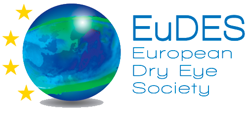
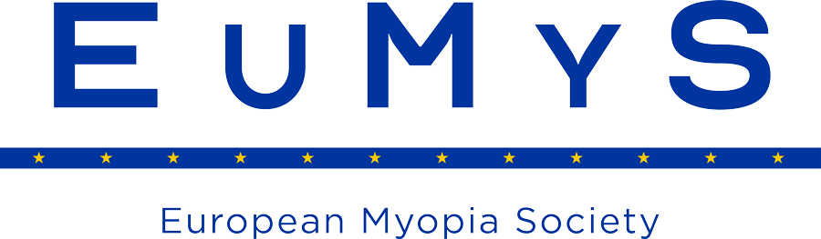
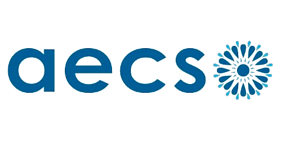
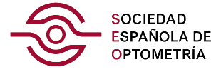
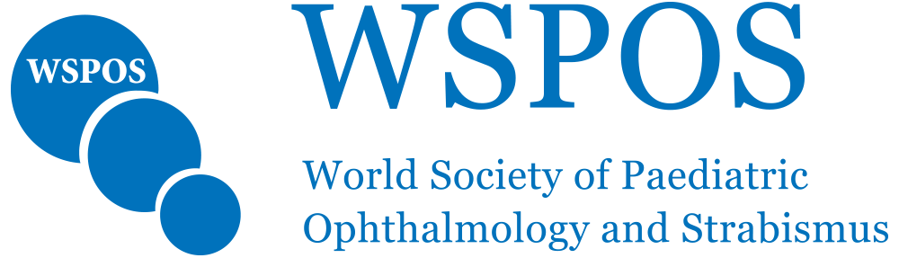
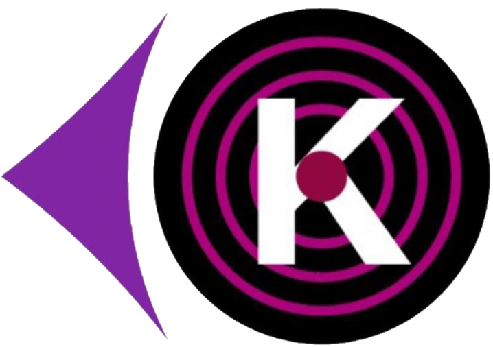

Conóceme
Sobre mí
D. YOEL VERA ZAPATA
Nº Colegiado: 28831Desarrolla su actividad profesional como fundador y director de ENFOCA VISIÓN, constituyendo el primer Grupo de Optometristas del país. Además, es responsable de la Unidad de Visión del Hospital Mesa del Castillo y optometrista en la Unidad de Oftalmología Pediátrica y Estrabismo de dicho hospital.
Asimismo colabora activamente con Clínica VISTA Ircovisión en Cartagena, Centro Médico Sanitas Murcia, Clínica Oftalmológica y Quirónsalud Alicante.
Realiza su actividad investigadora en el Grupo de Investigación en Optometría Clínica y Experimental de la Universidad de Murcia.

Titulación
- Graduado en Óptica y Optometría por la Universidad de Murcia con mención honorífica en su Trabajo Fin de Grado, obteniendo la calificación de 10-Matrícula de Honor.
- Máster Oficial Universitario en Optometría Clínica por la Universidad de Murcia con mención honorífica en su Trabajo fin de Máster, obteniendo la calificación de 10-Matrícula de Honor.
- Actualmente es Doctorando en Ciencias de la Visión por la Universidad de Murcia, bajo la línea de investigación de «Estimulación eléctrica transcraneal como tratamiento de la ambliopía».
Actividad profesional
- Fundador y director de ENFOCA VISIÓN.
- Responsable de la Unidad de Visión del Hospital Mesa del Castillo.
- Unidad de Oftalmología Pediátrica y Estrabismo del Hospital Mesa del Castillo.
Colaborador en:
- Clínica VISTA Ircovisión Cartagena - Unidad de Ojo seco y Terapia Visual.
- Centro Médico Sanitas Murcia - Optometría.
- Clínica oftalmológica COC - Unidad de ojo seco.
- Hospital Quirónsalud Alicante - Conselleria de Sanidad de la Comunidad Valenciana.

Asociaciones y comités científicos
Investigador en Grupo de Investigación en Optometría Clínica y Experimental de la Universidad de Murcia

Miembro de la European Dry Eye Society (EuDES – Sociedad Europea de Ojo Seco)
Miembro de la European Myopia Society (EuMyS – Sociedad Europea de Miopía)
Miembro de la Asociación Española de Contactología y Superficie Ocular (AECSO)
Miembro de la Sociedad Española de Optometría (SEO) Miembro de la Dry Eye Society of America (DESA – Sociedad Americana de Ojo Seco)

Miembro de la World Society of Paediatric Ophthalmology and Strabismus (WSPOS – Sociedad Mundial de Oftalmología Pediátrica y Estrabismo)
Miembro de la International Keratoconus Society (IKS – Sociedad Internacional de Queratocono)
Comunicaciones en congresos
- Comunicación oral: «Terapia visual en endotropia parcialmente acomodativa con correspondencia sensorial anómala» – I Congreso de Jóvenes Optometristas de Optoacademy, 2023.
- Comunicación oral y e-póster: «Estudio del tratamiento con estimulación eléctrica transcraneal (tDCS) en niños ambliopes estrábicos resistentes a parche» – Congreso Nacional de Optometría 2025, Región de Murcia, España.
- Comunicación oral: «Ambliopía: actualización, manejo y últimos avances» – I Simposio de Óptica y Optometría, 2025, Chile.
- Moderador de la sesión «Presbicia» y comunicación oral: «Protocolo Optométrico integral en cirugía de presbicia: evaluación, criterios de selección y claves para una interpretación clínica precisa» – I Congreso Internacional Láser Ocular Barcelona (LOB’25), Barcelona, España.
- Comunicación oral: «Eficacia de la estimulación eléctrica transcraneal (tDCS) en niños ambliopes estrábicos resistentes a la terapia de oclusión» – Congreso Nacional de Optometría, Contactología y Óptica Oftálmica (OPTOM 2026), Madrid, España.
- Comunicación póster: «Effectiveness of transcranial direct current stimulation (tDCS) in children with strabismic amblyopia resistant to occlusion therapy» – Visual and Physiological Optics 2026 (VPO’26), Cartagena, España.
- Comunicación oral: «La nueva era en el manejo del Ojo Seco: diagnóstico real y estrategias terapéuticas» – II Simposio de Óptica y Optometría, 2026, Chile.
- Comunicación oral: «Lo que el estrabismo se llevó» – Jornadas Científico-Técnicas 2026 de Visionary, Madrid, España.